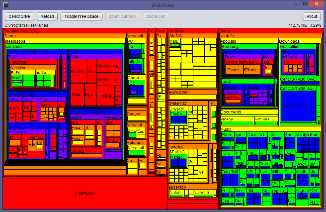

Scans a storage drive and builds an interactive map of files by file size.
Visually see which folders and files are taking up the most space in your filesystem. Written in Java for portability to multiple operating systems. Tested on Windows 7, Windows 8.1, Windows 10, CentOS, and macOS Sierra.

(low-res)
Disk Rover is a stand-alone .jar file. No installation needed.
Download the latest release here:
https://github.com/kriscode1/DiskRover/releases
If you cannot run jar files (because Java is not installed), download Java here first:
Software provided as is. If you find any bugs, feel free to create an issue on Github or email me. All feedback is welcome.
Contact: kriscode1project@gmail.com
Inspired by Sean Werkema's SpaceMonger v1.4.0.